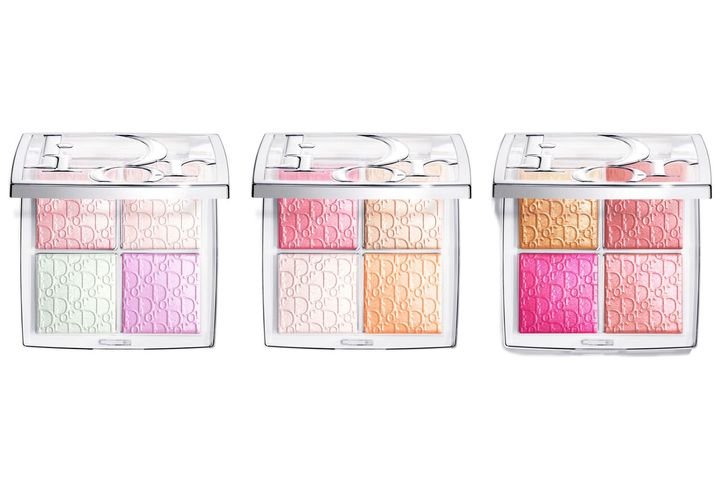
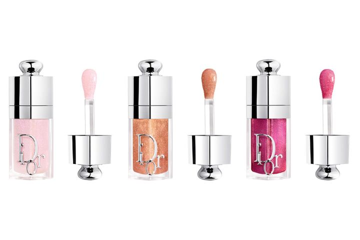
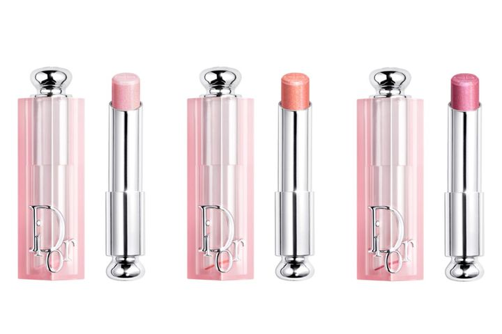

← 图文库NOVEMBER 2026 · Dior
Dior十一月，冷暖三组怎么挑
Dior十一月这组，我会先选色调，再决定要高光还是唇妆。
媒体预告里的高光盘是006冰粉、007蜂蜜、008梅子三个方向；润唇油和润唇膏对应113／114／115。高光¥6,930，唇部各¥4,950。
如果平时妆很淡，我会先去试浅色那组；想要明显一点的血色，再看看梅子方向。不过同一名字的唇油和润唇膏，也不能只看外壳就当成一样。
这篇是新品预告，不是已上嘴实测。媒体列11月13日发售、无预约计划，品牌和门店安排仍待补核，先存图做选色功课就好。
你会想整组配好，还是只挑一支？
#Dior #十一月新品 #限定彩妆 #日本美妆
产品图片参考 · 图片来源
产品图片参考 · 图片来源
产品图片参考 · 图片来源预约与商品信息
N30 · 后台四格高光限定色バックステージ グロウ マキシマイザー パレット 006／007／008
日本含税 ¥6,930 · 发售 2026-11-13
TRILL转载ELLE：无预约计划；品牌及目标门店公告仍待补核。
未核实先行安排。
媒体预告；官方日期与渠道待补核；记录 2026-10-19限定色号为媒体记录，当前不标为官网已核实；暂无本轮对应色实测试色。
核对商品／发售来源 ↗N31 · 魅惑润唇油限定色ディオール アディクト リップ グロウ オイル 113／114／115
日本含税 ¥4,950 · 发售 2026-11-13
TRILL转载ELLE：无预约计划；品牌及目标门店公告仍待补核。
未核实先行安排。
媒体预告；官方日期与渠道待补核；记录 2026-10-19限定色号为媒体记录，当前不标为官网已核实；暂无本轮对应色实测试色。
核对商品／发售来源 ↗N32 · 魅惑润唇膏限定色ディオール アディクト リップ グロウ 113／114／115
日本含税 ¥4,950 · 发售 2026-11-13
TRILL转载ELLE：无预约计划；品牌及目标门店公告仍待补核。
未核实先行安排。
媒体预告；官方日期与渠道待补核；记录 2026-10-19限定色号为媒体记录，当前不标为官网已核实；暂无本轮对应色实测试色。
核对商品／发售来源 ↗